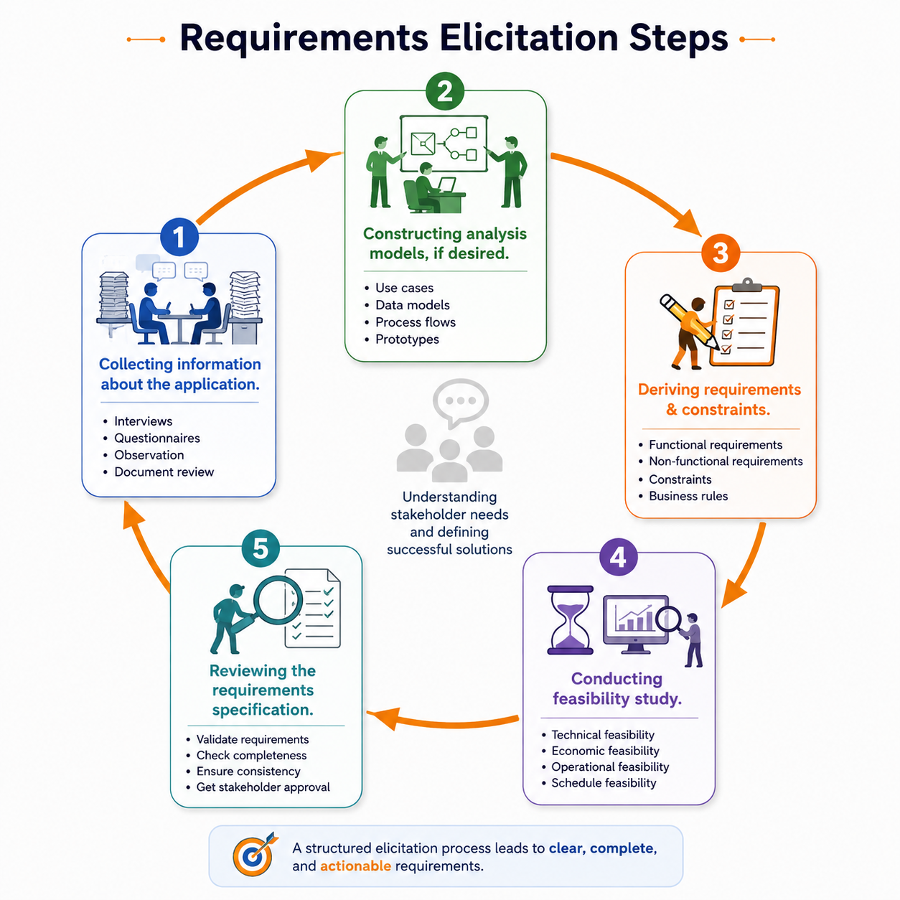

The Requirements Elicitation Process
Elicitation is repeated learning: collect evidence, model it, derive requirements, test feasibility, and review the result.
Explain the five major elicitation steps and the purpose of each one.
The five major steps
Gather information about the application, business, users, environment, problems, goals and constraints.
Build formal or informal analysis models when they improve shared understanding.
Turn evidence, goals, needs, standards and policies into requirements and constraints.
Check whether requirements are practical under technology, time, cost and external constraints.
Check the specification for correctness, completeness, consistency and agreement.

Clinic scheduling
Collect: interview receptionists and observe booking. Model: map appointment flow. Derive: formulate search, booking and notification requirements. Feasibility: check hospital identity and SMS integration. Review: walk through the requirements with users and technical staff.
Requirements compete for value, time and cost
The lecture uses willingness-to-pay and desired delivery timing to expose priorities. The wider principle is to make trade-offs explicit rather than treating every request as equally mandatory.
Collect → Model → Derive → Feasibility → Review. The next lesson opens up the first three steps in detail.